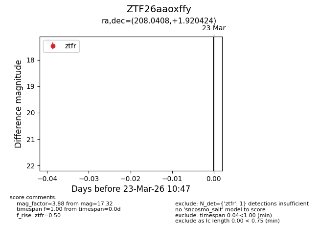
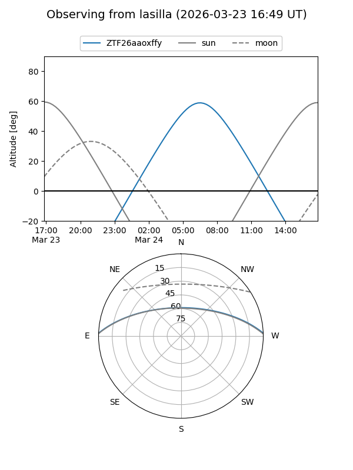
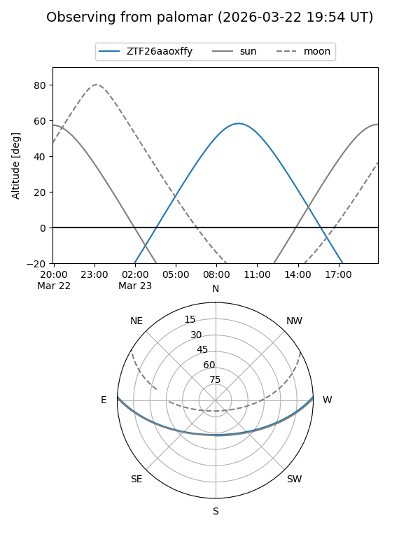

ZTF26aaoxffy
Target ZTF26aaoxffy at 2026-03-23 10:49
Aliases and brokers:
FINK: link
Lasair: link
ALeRCE: link
alt names
ZTF26aaoxffy (ztf,fink_ztf)
Coordinates:
equatorial (ra, dec) = 208.0408,+1.92042
equatorial (HMS+DMS) = 13:52:09.78,+01:55:13.53
galactic (l, b) = (335.4844,+60.89474)
Flags:
Photometry:
last ztfr=17.32
1 ztfr detections
Lightcurve

Visibility


Additional plots